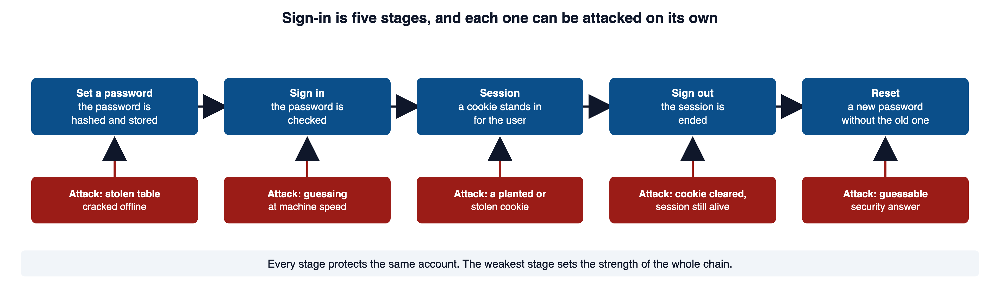
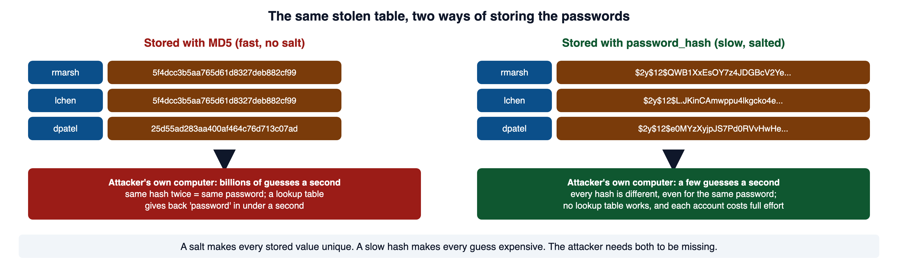
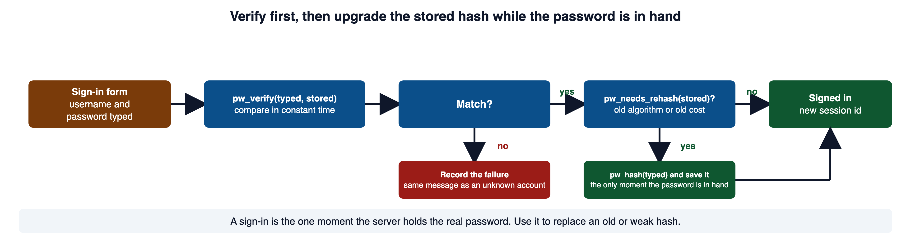
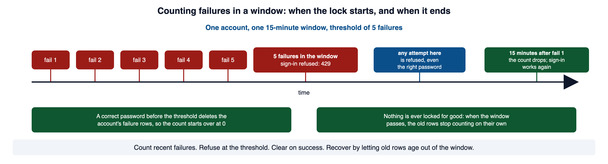
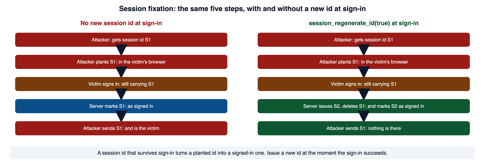
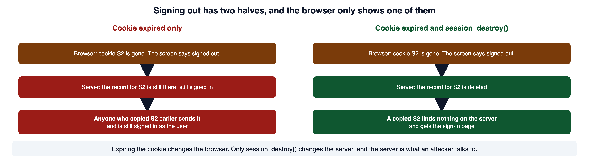
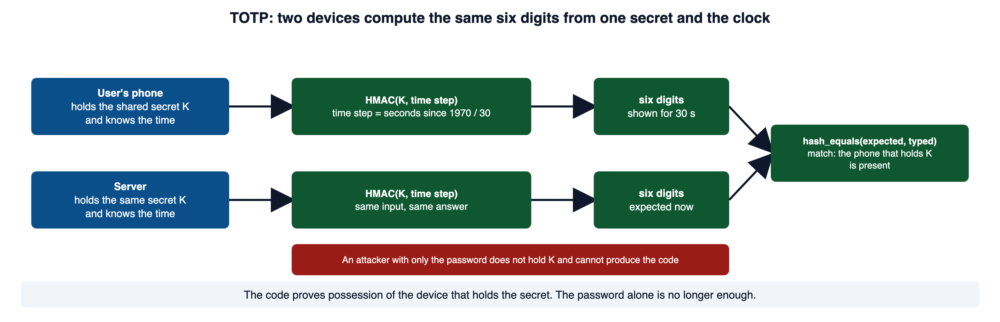

A colleague reports that an account still opens after its owner signs out. The password check works, and the browser looks signed out. What did the application actually revoke? Authentication and session management must protect both the moment of sign-in and the access that continues afterward.
The PHP examples make these controls concrete. Use the M09 PHP Companion lecture for function calls, session arrays, and control-flow syntax. Your main task here is to choose and verify security controls, rather than memorize PHP syntax.
1Required reading
These three are required reading for the module. This page teaches everything the assignment and the quiz need; the readings give the same material in the industry's own words, which is what a scanner finding, a CVE advisory, or an incident report will use.
- OWASP Top 10:2025 A07 Authentication Failures. The risk category for this module. It lists the sign-in weaknesses by name: automated guessing, weak passwords, weak recovery, weak hashes, missing MFA, and session identifiers that are reused or never ended.
- OWASP Authentication Cheat Sheet. The operative reference. It covers password length, the one error message for every failed sign-in, lockout, and MFA in one place.
- CLARK: Session-based Vulnerabilities. Courseware on session hijacking and fixation. Apply it to PHP's session functions as you read sections 8 and 9.
2What a sign-in proves
A sign-in answers one question: does this request come from the account it claims to come from? When the answer can be guessed, replayed, or accepted for the wrong account, the weakness is improper authentication (CWE-287).
A sign-in is not one check. It is a chain of stages, and each stage can be attacked on its own.

The weakest stage sets the strength of the whole chain. An attacker who cannot beat the password check may not need to. A reset flow that accepts a guessable answer hands over the account. A session that survives sign-out stays open for anyone who copied it.
This module's incident has that shape. An account was reached by someone who guessed a password the owner had reused on a site that was breached. The guessing run met no limit. When a guess finally worked, the session identifier the attacker already held was still valid after the sign-in. Two stages failed, and neither was the password check itself.
The A07 entry in section 1 lists the same stages as weaknesses: automated attacks that are not slowed, weak or breached passwords, weak recovery, weak hashes, no MFA, and session identifiers that are reused after sign-in or never ended.
3Storing passwords: a hash that is slow on purpose
Passwords are verified, never read back. The server never needs the password itself. It needs a way to check a submitted one. So it stores a one-way value computed from the password, and at sign-in it recomputes that value and compares.
Here is the shape that turns a stolen table into a list of passwords. The example is a staff directory tool, and it stores a SHA-1 digest of each password.
<?php
// WHY: A fast unsalted digest makes offline password guesses inexpensive and exposes password reuse across accounts.
// Stored when the password was set: sha1($password)
$row = q_one('SELECT id, password_sha1 FROM staff WHERE email = ?', [$email]);
if ($row !== null && $row['password_sha1'] === sha1($password)) {
$signedIn = true;
}Vulnerable. Why: A fast unsalted digest makes offline password guesses inexpensive and exposes password reuse across accounts.
Computing sha1('password') twice produces the same digest. Deterministic hashing alone is not the defect: the password store also lacks a unique salt and uses a function designed to make guesses inexpensive.
5baa61e4c9b93f3f0682250b6cf8331b7ee68fd8
5baa61e4c9b93f3f0682250b6cf8331b7ee68fd8An attacker who copies the table does not guess through your sign-in form. They guess on their own hardware, offline, where nothing slows them. Fast hashes permit very high offline guessing rates; hardware and algorithm determine the exact rate. GPU implementations can reach billions of MD5 guesses per second. Adaptive password hashes deliberately increase the work for each guess. With no salt, two accounts that share a password show the same digest, and a lookup table built in advance maps common digests straight back to their passwords.

Storing a password under a fast hash is a named weakness: use of a password hash with insufficient computational effort (CWE-916). The repair is a function that handles the salt, the work factor, and the algorithm choice for you.
<?php
// WHY: An adaptive salted hash increases the cost of offline guesses while allowing verification without recovering the password.
// Set or change a password: store the whole string password_hash returns.
$stored = password_hash($password, PASSWORD_DEFAULT);
// Sign in: compare the submitted password with the stored hash.
if (password_verify($password, $stored)) {
$signedIn = true;
}Secure. Why: An adaptive salted hash increases the cost of offline guesses while allowing verification without recovering the password.
$2y$12$QWB1XxEsOY7z4JDGBcV2YeqLyfyjZ2PLpQnXM9ngaCr/wmbfji1dmThat string is 60 characters, and it describes itself. $2y$ names the algorithm, bcrypt. 12 is the work factor, so each guess costs 2 to the power of 12 rounds. The next 22 characters are the salt, and the rest is the digest. Because the salt and the cost are inside the string, password_verify needs nothing else to check a password.
Your portal's lib/passwords.php wraps the three functions at the current defaults, so a caller never picks an algorithm or a cost. pw_hash returns the hash or throws, never false. pw_verify compares in constant time and returns false for any mismatch, including a malformed hash. pw_needs_rehash is the subject of the next section.
PHP Manual: password_hash documents PASSWORD_DEFAULT, the automatic salt, the cost change in 8.4, and the 72-byte limit. PHP Manual: password_verify confirms that the function is safe against timing attacks and that the stored string carries everything it needs. OWASP Password Storage Cheat Sheet gives the current algorithm and work-factor guidance, including a bcrypt work factor of at least 10.
4Verify, then rehash
A hash made under old settings still verifies years later, because the settings travel inside the string. That is also how you move old accounts to stronger settings without asking anyone to reset. The one moment the server holds the real password is a successful sign-in. Use it.

<?php
// WHY: Verify before rehashing so an incorrect submitted password never replaces the stored credential.
require_once __DIR__ . '/lib/passwords.php';
require_once __DIR__ . '/lib/query.php';
$row = q_one('SELECT id, password_hash FROM accounts WHERE email = ?', [$email]);
if ($row === null || !pw_verify($password, $row['password_hash'])) {
sign_in_failed(); // one message for every failure; section 6
return;
}
if (pw_needs_rehash($row['password_hash'])) {
q('UPDATE accounts SET password_hash = ? WHERE id = ?', [pw_hash($password), $row['id']]);
}
sign_in_succeeded($row['id']);Secure. Why: Verify before rehashing so an incorrect submitted password never replaces the stored credential.
The same shape moves an account off a fast hash. An account that still holds an old digest verifies against it once, and on success the code writes a password_hash value and clears the old column. No fast hash is ever written again.
<?php
// WHY: Upgrade a verified legacy credential and remove its fast digest so future database leaks do not expose the old weak representation.
if ($row['password_hash'] === null) {
// Legacy row: an old SHA-1 digest. Verify against it one last time.
if (!hash_equals($row['password_sha1'], sha1($password))) {
sign_in_failed();
return;
}
q(
'UPDATE accounts SET password_hash = ?, password_sha1 = NULL WHERE id = ?',
[pw_hash($password), $row['id']]
);
} elseif (!pw_verify($password, $row['password_hash'])) {
sign_in_failed();
return;
}Secure. Why: Upgrade a verified legacy credential and remove its fast digest so future database leaks do not expose the old weak representation.
PHP Manual: password_needs_rehash shows the verify-then-rehash example this section is built on. The Password Storage Cheat Sheet linked in section 3 covers upgrading legacy hashes at the next sign-in, and the option of expiring hashes for inactive users.
5Password rules and rotation
The rules that decide which passwords ever reach the store come from NIST SP 800-63B, revision 4, published in July 2025. Its rules run against several old habits.
| Rule | What NIST says |
|---|---|
| Minimum length | 15 characters when the password is the only factor; 8 when MFA is also required |
| Maximum length | allow at least 64 characters, so passphrases fit |
| Composition | no required mix of character types |
| Breached passwords | compare every new password against a list of common and breached passwords, as a whole |
| Scheduled change | do not require users to change passwords on a schedule |
| Known exposure | force a change when there is evidence the password was compromised |
| Security questions | do not use them |
<?php
// WHY: Length and a whole-password blocklist reject common guesses without imposing predictable composition patterns; this is a policy illustration, not a complete password-setting handler.
function password_is_acceptable(string $password, array $breachedList): bool
{
$length = mb_strlen($password, 'UTF-8');
if ($length < 15 || $length > 64) {
return false; // length is the one rule about shape
}
return !in_array($password, $breachedList, true); // the whole value, strictly
}Secure. Why: Length and a whole-password blocklist reject common guesses without imposing predictable composition patterns; this is a policy illustration, not a complete password-setting handler.
Rotation follows the same logic. A password that was exposed in a breach, a log, or a shared screen is changed at once, because an attacker may already hold it. A password that was never exposed gains nothing from a change on a calendar. The change on a calendar produces predictable passwords, and NIST now says not to require it.
NIST SP 800-63B rev. 4, section 3.1.1 is the source for every row in the table, including the change forced after evidence of compromise. OWASP Credential Stuffing Prevention Cheat Sheet defines the attack and lists the defenses. The Authentication Cheat Sheet in section 1 states the same length and composition rules.
6One answer for every failed sign-in
Two failures, a wrong password on a real account and any password on an account that does not exist, must look the same from outside. If they differ, the sign-in page tells an attacker which usernames are real. That list is the input to every guessing run that follows.
Your portal already gives one message on both paths. Send a wrong password for a real account, then any password for an unknown account, and compare.
HTTP/1.1 200 OK
<p class="error">That username and password did not match.</p>The seeded portal uses that message for both paths; verify the actual response from your copy. The OWASP cheat sheet gives Login failed; Invalid user ID or password. as its example of a correct message, and names Login failed, invalid user ID. as a wrong one.
Timing is the channel people forget. If the code skips the password check when the account is missing, that path returns faster, and the difference can be measured. The fix is to do the same work on both paths.
<?php
// WHY: Run password verification for missing accounts too, reducing an account-existence signal in response timing.
// A real hash of a random value, made once and kept as a constant.
const DUMMY_HASH = '$2y$12$QWB1XxEsOY7z4JDGBcV2YeqLyfyjZ2PLpQnXM9ngaCr/wmbfji1dm';
$row = q_one('SELECT id, password_hash FROM accounts WHERE email = ?', [$email]);
$stored = $row['password_hash'] ?? DUMMY_HASH; // same cost whether or not the row exists
$matched = pw_verify($password, $stored) && $row !== null;
if (!$matched) {
http_response_code(401);
exit('The username or password was incorrect.');
}Secure. Why: Run password verification for missing accounts too, reducing an account-existence signal in response timing.
The Authentication Cheat Sheet in section 1 gives the correct and incorrect messages and the timing guidance. PHP Manual: hash_equals documents the constant-time comparison, and says to pass the user's value as the second argument.
7Counting failures: the lockout pattern
One uniform message still lets an attacker try password after password. Failing to slow repeated attempts is improper restriction of excessive authentication attempts (CWE-307), and it is the core of this module's incident.
The limit lives on the server. A limit in page script or in the browser is not a limit, because the requester controls the client. Your portal's data/seed.sql already has the table for it. Sprint 20 added login_failures after a run of lockout complaints nobody could reconstruct, and the file notes that nothing writes to it or reads it yet.
CREATE TABLE login_failures (
id INTEGER PRIMARY KEY AUTOINCREMENT,
username TEXT NOT NULL,
source TEXT NOT NULL,
failed_at TEXT NOT NULL
);The pattern has four moves: record a failure, count recent failures, refuse at a threshold, and clear on success. Recovery is built in, because a count over a window drops on its own when the window passes.

The helpers use q and q_one from lib/query.php, with ? placeholders, the way Module 04 section 6 showed. The timestamps are text in Y-m-d H:i:s form, the same form lib/tokens.php writes, so a string comparison in SQL orders them correctly.
<?php
// WHY: Server-side timestamped failures let the application enforce and audit a bounded guessing window.
require_once __DIR__ . '/lib/query.php';
function record_failure(string $username, string $source): void
{
q(
'INSERT INTO login_failures (username, source, failed_at) VALUES (?, ?, ?)',
[$username, $source, date('Y-m-d H:i:s')]
);
}
function account_failures(string $username, int $windowSeconds): int
{
$since = date('Y-m-d H:i:s', time() - $windowSeconds);
$row = q_one(
'SELECT COUNT(*) AS n FROM login_failures WHERE username = ? AND failed_at > ?',
[$username, $since]
);
return (int) $row['n'];
}
function source_failures(string $source, int $windowSeconds): int
{
$since = date('Y-m-d H:i:s', time() - $windowSeconds);
$row = q_one(
'SELECT COUNT(*) AS n FROM login_failures WHERE source = ? AND failed_at > ?',
[$source, $since]
);
return (int) $row['n'];
}
function clear_failures(string $username): void
{
q('DELETE FROM login_failures WHERE username = ?', [$username]);
}Secure. Why: Server-side timestamped failures let the application enforce and audit a bounded guessing window.
After five failures for rmarsh from one address, plus one failure an hour old, q_one returns the count inside the window.
array(1) {
["n"]=>
int(5)
}The hour-old row is still in the table, and it is not counted, because its failed_at is earlier than $since. That is the recovery: rows age out of the window with no cleanup job. After clear_failures('rmarsh'), the same query returns 0.
The sign-in handler checks both keys before it verifies the password, and records or clears afterward.
<?php
// WHY: Checking account and source counters before verification slows targeted and noisy guessing; it does not eliminate deliberate account lockout.
$window = 15 * 60; // 15 minutes
$source = $_SERVER['REMOTE_ADDR'] ?? 'unknown';
if (account_failures($username, $window) >= 5 || source_failures($source, $window) >= 20) {
http_response_code(429); // Too Many Requests
header('Retry-After: ' . $window);
exit('Too many failed sign-ins. Try again in 15 minutes.');
}
if (!$matched) {
record_failure($username, $source);
http_response_code(401);
exit('The username or password was incorrect.');
}
clear_failures($username); // success: the count starts overSecure. Why: Checking account and source counters before verification slows targeted and noisy guessing; it does not eliminate deliberate account lockout.
HTTP/1.1 429 Too Many Requests
Retry-After: 900
Too many failed sign-ins. Try again in 15 minutes.Two keys are counted because each one misses something.
| Key | What it limits | What it misses |
|---|---|---|
| Per account | a targeted run at one user | lets an attacker lock a victim out on purpose |
| Per source address | one noisy client | a run spread across many addresses |
The thresholds are choices. NIST sets an upper bound of 100 failed attempts in a row before an authenticator is disabled, and says lower limits are allowed. The course example uses five failures and a fifteen-minute observation window. OWASP's testing guide describes testing candidate thresholds and recovery behavior; these values are a teaching policy, not universal requirements. Pick numbers, write them down, and test them.
MDN: 429 Too Many Requests defines the status code and its use for rate limiting. MDN: Retry-After documents the header and the delay-in-seconds form. The Authentication Cheat Sheet in section 1 carries the lockout and denial-of-service guidance, and NIST SP 800-63B in section 5 carries the rate-limit requirement.
8The session identifier is a bearer credential
HTTP does not remember anyone between requests. After a successful sign-in, the server issues a session identifier, stores it in a cookie, and from then on identity travels as that string. Module 01 section 6 named it a bearer credential: whoever presents it is treated as the user. Nothing about a later request re-proves who sent it.
That sets two requirements. The identifier must be unguessable, and it must be handled so it does not leak.
PHP's session layer makes the identifier for you when you call session_start(). Do not build your own from a counter, a timestamp, a username, or md5(uniqid()). A predictable identifier lets an attacker guess an active session and skip the sign-in. OWASP asks for at least 64 bits of entropy and says to use the identifier your framework issues.
The cookie that carries it needs its attributes set before the session starts.
<?php
// WHY: Configure cookie protections before starting the session so the issued cookie limits transport and script exposure.
ini_set('session.use_strict_mode', '1'); // reject any identifier the server did not issue
session_set_cookie_params([
'lifetime' => 0, // session cookie; browser session restoration may retain it
'path' => '/',
'secure' => true, // sent over HTTPS only
'httponly' => true, // not readable by page script
'samesite' => 'Lax', // Module 06 section 7 covers the cross-site trade-off
]);
session_start();Secure. Why: Configure cookie protections before starting the session so the issued cookie limits transport and script exposure.
Your portal's first visit to login.php answers with Set-Cookie: PHPSESSID=...; path=/ and nothing more. No HttpOnly, no Secure, no SameSite. The identifier itself is fine, because PHP made it. The cookie around it is not.
The httponly flag does not stop network capture, a malicious browser extension, or same-origin script acting as the user. Treat it as one layer, not the answer.
OWASP Session Management Cheat Sheet is the source for the entropy requirement, the three cookie attributes, and keeping the identifier out of URLs. PHP Manual: Securing Session INI Settings explains each setting the way the runtime applies it, including use_strict_mode. PHP Manual: session_set_cookie_params documents the array form and the rule that it runs before session_start(). MDN: Set-Cookie describes HttpOnly, Secure, and SameSite from the browser's side. W3Schools: PHP Sessions has runnable examples of session_start and $_SESSION.
9Session fixation and a new identifier at sign-in
The dangerous moment is the one where a visitor becomes a signed-in user and the identifier does not change. If the string that identified the browser before sign-in still identifies it afterward, anyone who knew the earlier value now holds a signed-in session.
<?php
// WHY: Keeping the pre-login identifier attaches authenticated access to a value an attacker may already know.
session_start(); // the visitor already had an identifier when they reached this page
if ($matched) {
$_SESSION['account_id'] = $row['id']; // stored under the identifier the visitor arrived with
}Vulnerable. Why: Keeping the pre-login identifier attaches authenticated access to a value an attacker may already know.
The password check is correct. The defect is that the identifier never changed, so the signed-in state is attached to a value that existed before the sign-in. That is session fixation (CWE-384).

The fix is to issue a fresh identifier at the instant the sign-in succeeds, before any signed-in state is stored, and to remove the old record so the planted value is dead.
<?php
// WHY: Issue a new identifier before authenticated state is stored so the known pre-login identifier cannot inherit access.
session_start();
if ($matched) {
session_regenerate_id(true); // new identifier now; delete the old record
$_SESSION['account_id'] = $row['id'];
$_SESSION['signed_in_at'] = time();
$_SESSION['last_seen'] = time();
}Secure. Why: Issue a new identifier before authenticated state is stored so the known pre-login identifier cannot inherit access.
These illustrative response lines show the expected identifier change. Capture your own before-and-after responses for evidence; these values are examples, not observations from your copy.
HTTP/1.1 401 Unauthorized
Set-Cookie: PHPSESSID=711c32d295bdd25cc0da174f43db5167; path=/; HttpOnly; SameSite=Lax
The username or password was incorrect.
HTTP/1.1 303 See Other
Set-Cookie: PHPSESSID=50084eb70f1e1da50173b25445a9498b; path=/; HttpOnly; SameSite=Lax
Location: /home.phpPHP Manual: session_regenerate_id documents the function and the delete_old_session argument. PHP Manual: Session Management Basics is the source for regenerating at privilege elevation, regenerating before storing the signed-in state, and the destroyed-timestamp alternative. OWASP WSTG: Testing for Session Fixation is the test: compare the cookie before and after sign-in, and the site is vulnerable if it does not change.
10Timeouts and sign-out
A session is a standing grant of access, so it needs an end. A session that outlives its use is insufficient session expiration (CWE-613). Use two limits together. An idle timeout ends a session that has gone quiet, which protects an unattended browser. An absolute lifetime ends a session after a fixed span no matter what, which bounds how long a stolen identifier is worth anything.
Both limits are checked against server-side values. A cookie's own expiry is a request to the browser, and an attacker replaying a captured identifier is not using your browser.
<?php
// WHY: Enforce idle and absolute limits on the server because a client can keep presenting a captured cookie.
session_start();
$now = time();
$idleLimit = 15 * 60; // 15 minutes without a request
$absoluteLimit = 8 * 60 * 60; // 8 hours from sign-in, active or not
$idle = isset($_SESSION['last_seen']) && $now - $_SESSION['last_seen'] > $idleLimit;
$expired = isset($_SESSION['signed_in_at']) && $now - $_SESSION['signed_in_at'] > $absoluteLimit;
if ($idle || $expired) {
end_session(); // the sign-out below
header('Location: /login.php');
exit;
}
$_SESSION['last_seen'] = $now;Secure. Why: Enforce idle and absolute limits on the server because a client can keep presenting a captured cookie.
Sign-out is where the module's third quiet defect lives. The browser can only show you one half of it.

<?php
// WHY: Remove session data, expire the browser cookie, and invalidate the server record so a copied identifier cannot retain access.
function end_session(): void
{
$_SESSION = []; // drop the data
// Expire the browser's copy of the cookie.
$params = session_get_cookie_params();
setcookie(session_name(), '', time() - 3600, $params['path'], $params['domain'],
$params['secure'], $params['httponly']);
session_destroy(); // remove the server-side record
}Secure. Why: Remove session data, expire the browser cookie, and invalidate the server record so a copied identifier cannot retain access.
The manual says session_destroy() removes the session data and nothing else: it does not clear $_SESSION and it does not remove the cookie. That is why the function above does all three. For accounts that hold sensitive data, also end every other session after a password change.
PHP Manual: session_destroy is the source for the three-step sign-out, including the setcookie call with a time in the past. The Session Management Cheat Sheet in section 8 requires both an idle timeout and an absolute timeout, enforced on the server, and says sign-out must invalidate the session on the server side.
11Multi-factor authentication and TOTP
A password can be guessed, phished, or lifted from another site's breach. Relying on it alone is use of single-factor authentication (CWE-308). Multi-factor authentication answers that directly: a correct password is not enough, because a second factor from a different category is also required.
The second factor for this course is a time-based one-time password, or TOTP: the six-digit code an authenticator app shows and replaces every thirty seconds. RFC 6238 defines it as an HMAC over a shared secret and a time step.

<?php
// WHY: Check the code type and format before constant-time comparison; a complete verifier also limits attempts and prevents code replay.
// $expected is the six-digit code a TOTP library computed for the current step.
$typed = $_POST['code'] ?? '';
if (!is_string($typed) || !preg_match('/\A[0-9]{6}\z/', $typed) || !hash_equals($expected, $typed)) {
second_factor_failed();
return;
}Secure. Why: Check the code type and format before constant-time comparison; a complete verifier also limits attempts and prevents code replay.
RFC 6238 recommends allowing at most one time step for transmission delay. A vetted library handles the algorithm and permitted clock window. Rate-limit failed codes and record successful use so the same code cannot be accepted again during its validity window. The comparison below illustrates only the final check, not a complete MFA verifier.
Not every second factor resists the same attacks. A code the user reads and types can be relayed to a fake site in real time. A phishing kit forwards the code to the real site inside the thirty-second window. OWASP lists TOTP as susceptible to phishing, though short-lived, and prefers FIDO2 and WebAuthn authenticators, whose response is bound to the site's origin.
RFC 6238: TOTP defines the algorithm, the 30-second default step, and the one-step allowance for delay. OWASP Multifactor Authentication Cheat Sheet is the source for factor categories, the password-plus-PIN rule, the phishing note on TOTP, and the reauthentication rule for factor changes.
12Account recovery
A password reset is a second door into the same account. If it is easier to force than the sign-in, attackers use it instead. A reset that can be beaten without the password is a weak password recovery mechanism (CWE-640).
Your portal's reset-password.php asks a security question and compares the typed answer with the stored one. The seeded answers are the office each person works in, and the question is the same for every account. NIST says not to prompt for knowledge-based answers at all, and OWASP says a security question must never be the only gate on a reset.
A sound reset has these parts, and each closes a specific hole.
- One response to the request, whether or not the account exists, so the reset does not confirm addresses.
- A token that is random, single-use, short-lived, and bound to one account.
- Delivery to a channel verified earlier, never one supplied in the request.
- A rate limit on requesting a reset and on redeeming a token.
- Only the hash of the token in storage, never the token itself.
- Every other session of the account ended once the reset completes, and a notice sent to the owner.
Your portal's lib/tokens.php already builds the token. token_issue draws 32 random bytes, stores only the SHA-256 of the token in reset_tokens with an expiry, and returns the token once. token_check returns the username only while the token is unexpired and unused. token_burn marks it used.
<?php
// WHY: A consistent reset response limits account enumeration and sends the token only to a previously verified address.
require_once __DIR__ . '/lib/tokens.php';
require_once __DIR__ . '/lib/passwords.php';
// Step 1: the request. One answer whether or not the account exists.
$account = q_one('SELECT username, email FROM accounts WHERE username = ?', [$username]);
if ($account !== null) {
$token = token_issue($account['username'], 15 * 60); // valid 15 minutes
send_reset_link($account['email'], '/reset.php?t=' . $token);
}
echo 'If that account exists, a reset link is on its way.';Secure. Why: A consistent reset response limits account enumeration and sends the token only to a previously verified address.
<?php
// WHY: Validate the token before changing a credential; production redemption must atomically consume it with the password update.
// Step 2: redeem. The link carries the token; the table holds only its hash.
$token = $_GET['t'] ?? '';
$username = is_string($token) ? token_check($token) : null;
if ($username === null) {
http_response_code(400);
exit('That link is not valid.');
}
q('UPDATE accounts SET password_hash = ? WHERE username = ?', [pw_hash($newPassword), $username]);
token_burn($token);Secure. Why: Validate the token before changing a credential; production redemption must atomically consume it with the password update.
A reset token can be stored under a fast hash, unlike a password. The token is generated from 256 bits of CSPRNG output, so exhaustive guessing is computationally infeasible when secure randomness and adequate length are preserved. A human password has little randomness, which is why its store needs a slow hash. A full-entropy token does not need password-style stretching, but still needs expiry, single-use enforcement, and protected delivery.
OWASP Forgot Password Cheat Sheet is the source for the consistent response, the token requirements, the rate limits, the session invalidation, and the rule on security questions. PHP Manual: random_bytes documents the CSPRNG behind token_issue. NIST SP 800-63B in section 5 carries the rule against knowledge-based authentication.
13Proving the controls work
A control is in place when a test that used to pass now fails. Sign-in and session defects are quiet, so you confirm them by observation rather than by reading the code and trusting it. Send the requests with curl, and read the cookies in the browser's Application panel, both shown on the Orientation page Requests and Developer Tools. Run this set before and after a change, and keep the output as evidence.
| Test | Expected after the control is in place |
|---|---|
| Correct password | signed in, and the Set-Cookie line carries a new identifier |
| Wrong password | one message, same status and body as an unknown account |
| Unknown username | identical to a wrong password |
| Five rapid failures, then the right password | 429 with Retry-After; the right password is refused inside the window |
| The same account after the window | signs in; its failure rows no longer count |
| Identifier captured before sign-in, replayed after | rejected |
| Step up to an administrative page | identifier changes again |
| Idle for longer than the idle limit | sent to the sign-in page |
| Identifier reused after sign-out | rejected |
| Reset token that is invalid, reused, or expired | rejected in all three cases |
Be honest about what a set of controls does not cover. A lockout and a new identifier at sign-in close the guessing path and the fixation path. They do not repair a password reused from a breach; that is what MFA addresses. Never put a real password or a real session identifier into submitted evidence, including screenshots. Redact them and describe them instead.
OWASP WSTG: Testing for Weak Lock Out Mechanism is the tester's version of the lockout rows: fail three, four, then five times, confirm the right password is refused, and confirm it works again after the unlock window.
14Common misconceptions
✕"Passwords should be encrypted."
Encryption can be reversed, which is the property you do not want. If the system can recover the password, so can an attacker who takes the key. Passwords are stored as a slow, salted hash and verified.
✕"A salt is a secret."
A salt is unique per password and stored right beside the hash. Its job is to defeat lookup tables, not to stay hidden.
✕"SHA-256 with a salt is a safe password store."
It is a fast hash. The offline guessing rate barely drops. A password store needs a hash that is slow on purpose, with a work factor you can raise.
✕"Forcing a password change every 90 days is a control."
NIST says not to require scheduled changes. They produce predictable passwords. Change a password after a known exposure.
✕"Locking the account after five failures solves guessing."
It also lets anyone lock any user out on purpose. Count the source as well, keep the window short, and let the count age out.
✕"Two sign-in steps are multi-factor authentication."
A password and a PIN are both things you know. MFA needs factors from different categories.
✕"Closing the browser signs you out."
The server-side session may still be valid, and an attacker replaying the identifier is not using your browser. Sign-out destroys the record on the server.
✕"HttpOnly prevents session theft."
It blocks page script from reading the cookie. It does nothing about network capture, a malicious extension, or same-origin script acting as the user.
15Check your understanding
Work these before you look at the answers.
- What question does authentication answer, and how is that different from what authorization answers?
- Why is a fast hash such as SHA-1 the wrong way to store a password, even with a salt added?
- What is a salt, is it a secret, and what does it defeat?
- What does
password_needs_rehashcheck, and when in the sign-in is the only moment you can act on its answer? - A rule requires a capital letter, a digit, and a symbol, and a change every 90 days. Which NIST rules does it break, and when should a password be changed?
- Why must a wrong password and an unknown account return the same message, status, and timing?
- A lockout counts failures per account only. What attack does that enable, and what second key fixes it?
- Why is the session identifier described as a bearer credential, and what does that require of how it is generated?
- What does the
trueargument tosession_regenerate_idchange, and why is a sign-in that skips the call still vulnerable even with a correct password check? - A sign-out expires the cookie and nothing else. What does the user see, and what has not happened?
- What makes two factors independent, and why is a password plus a PIN not MFA?
- Why can a reset token be stored under a fast hash when a password cannot?
Answers: (1) authentication asks who the caller is; authorization asks what that caller may do; they fail independently. (2) a fast hash lets an attacker who stole the table try billions of guesses a second offline; a salt stops lookup tables but does not slow the guessing. (3) a random value mixed into each password before hashing, stored next to the hash, not secret; it makes equal passwords hash differently and defeats precomputed tables. (4) whether the hash's algorithm and cost match the current defaults; right after a successful verify, because that is when the server holds the password. (5) composition rules and scheduled rotation, both of which NIST says not to require; change a password after a known exposure. (6) any difference tells an attacker which usernames exist, and that list feeds a guessing run. (7) anyone can lock a victim out on purpose; count failures per source address as well, and let the count age out of a short window. (8) possession is identity and nothing later re-proves the sender, so it must come from a CSPRNG, which PHP's session layer provides. (9) true deletes the old server-side record; without a new identifier, a value planted before sign-in becomes a signed-in session at sign-in. (10) a signed-out screen; the server-side record is still alive, so a copied identifier still works. (11) compromising one does not yield the other; a password and a PIN are both things you know. (12) the token is 256 random bits with nothing to guess, while a password has little randomness and needs a slow hash to make guessing expensive.
16References and further study
The three required readings in section 1 and the manual pages linked through the lecture are the main references. Each entry below names what it confirms.
- CWE-287: Improper Authenticationcwe.mitre.org
The formal entry behind section 2: the product does not prove, or insufficiently proves, a claimed identity.
- CWE-916: Use of Password Hash With Insufficient Computational Effortcwe.mitre.org
The formal entry behind section 3.
- CWE-307: Improper Restriction of Excessive Authentication Attemptscwe.mitre.org
The formal entry behind section 7. When a finding says CWE-307, this is what it means.
- CWE-384: Session Fixationcwe.mitre.org
The formal entry behind section 9: a new session is established without invalidating the existing identifier.
- CWE-613: Insufficient Session Expirationcwe.mitre.org
The formal entry behind section 10.
- CWE-308: Use of Single-factor Authenticationcwe.mitre.org
The formal entry behind section 11.
- CWE-640: Weak Password Recovery Mechanism for Forgotten Passwordcwe.mitre.org
The formal entry behind section 12.
- NIST SP 800-63B-4 publication recordcsrc.nist.gov
Confirms the title, the revision, and the July 2025 publication date cited in section 5.
- PHP Manual: session_startphp.net
Confirms that the function resumes a session from an identifier passed by cookie, GET, or POST, which is why
use_strict_modein section 8 matters.
Further study.